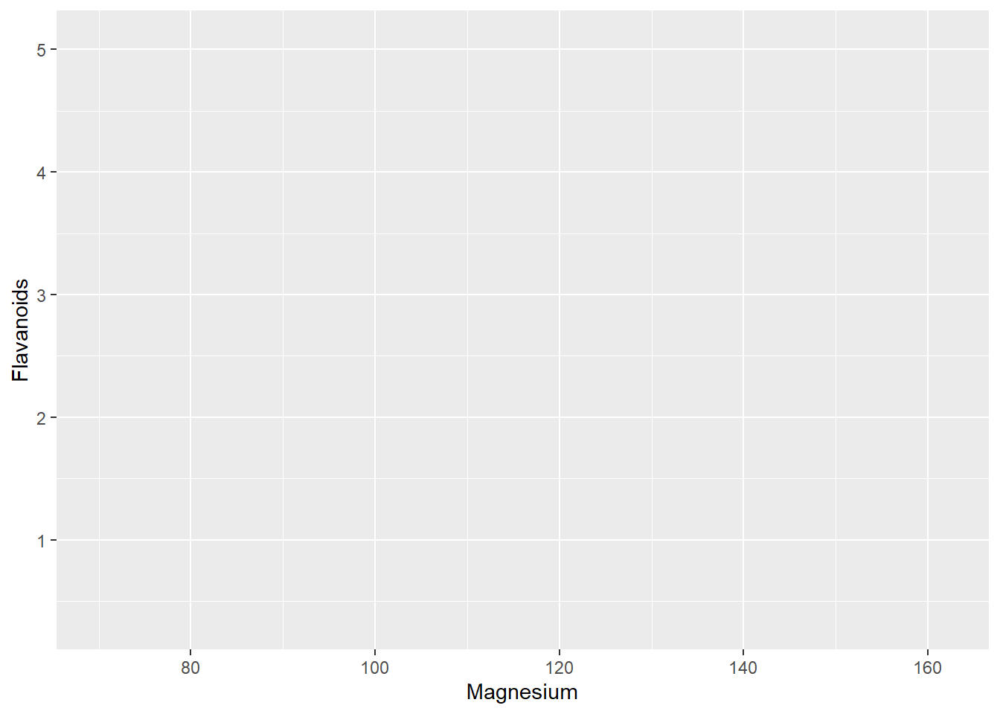
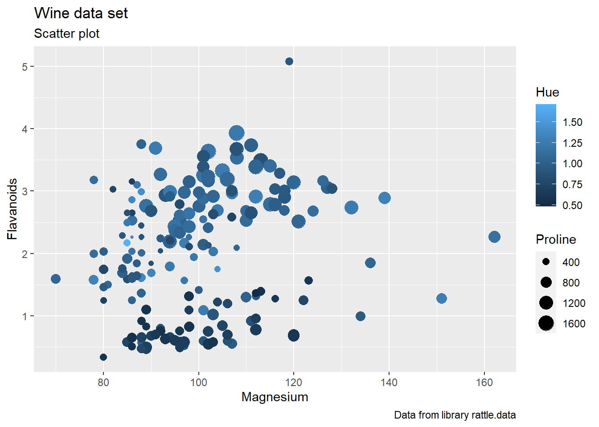
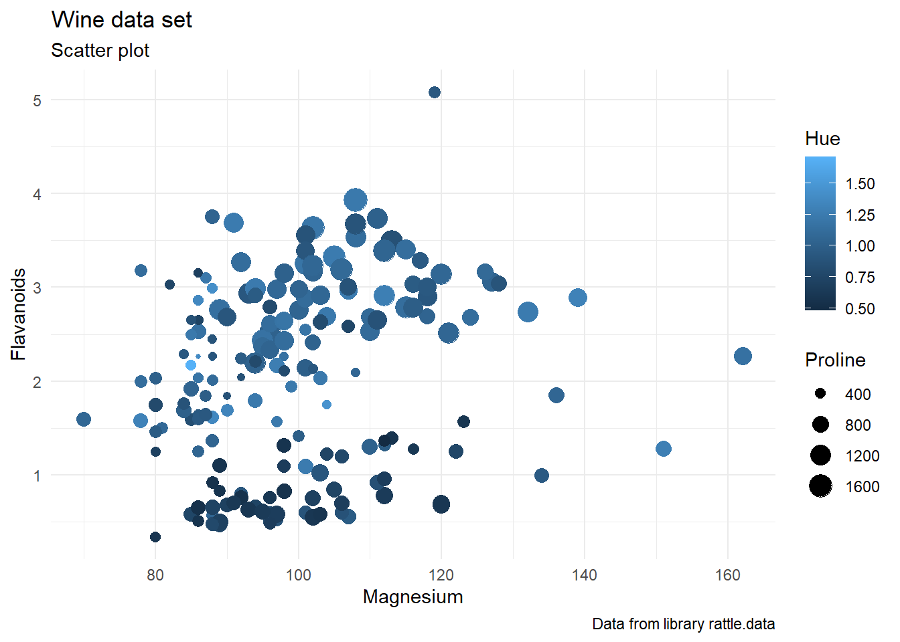
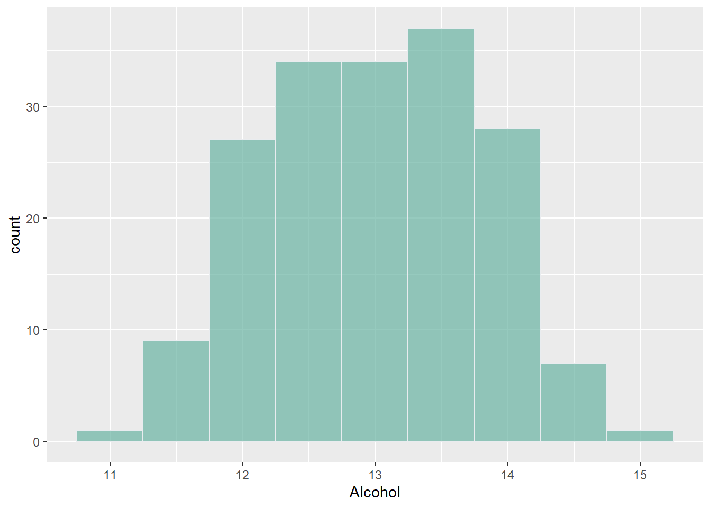
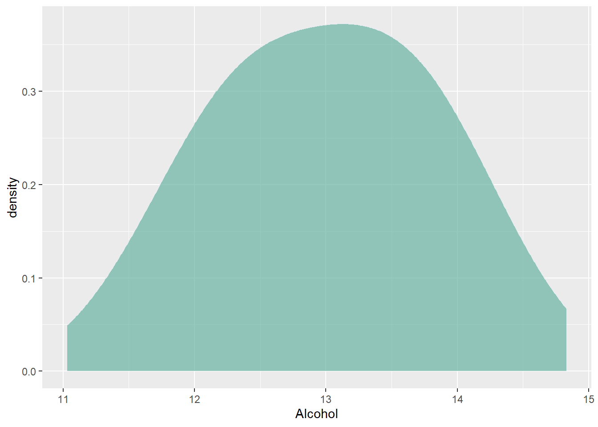
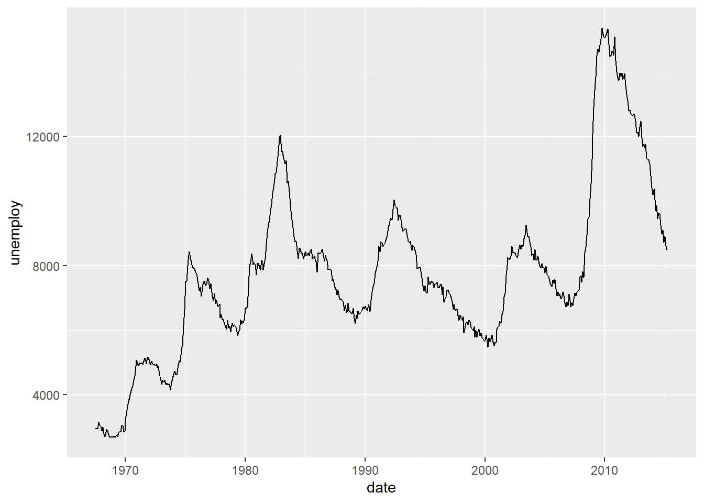
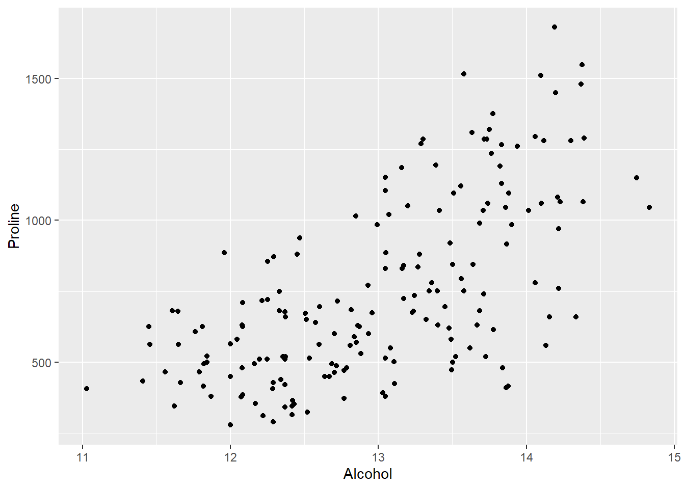
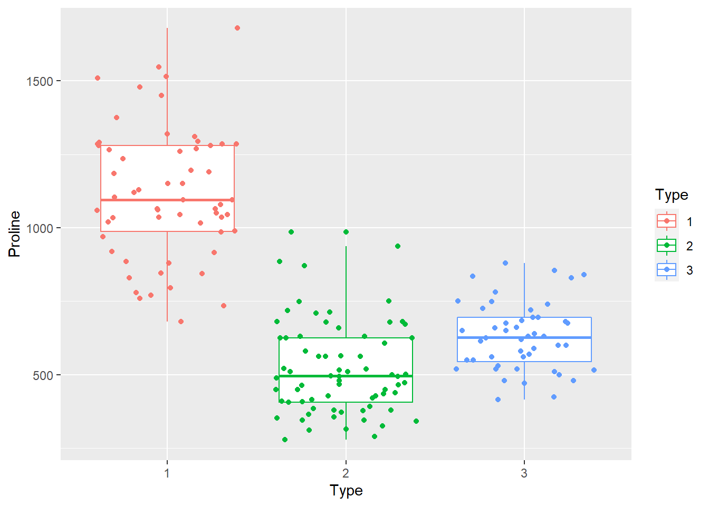

Obiettivi di questo tutorial
Se R è un linguaggio, le librerie sono come dei dialetti, introducono cioè nuovi comandi specifici per una determinata task, come caricare, manipolare, rappresentare, modellare i dati, etc.. . In questo contesto ggplot è un linguaggio nel linguaggio, un dialetto con la propria grammatica. Questo introduce una maggiore complessità in ottica utente ma garantisce una flessibilità quasi illimitata per la creazione di rappresentazioni grafiche.
In questo tutorial imparerai:
- cos’è la libreria ggplot2,
- la sintassi ggplot2,
- rappresentare la disrtibuzioni uni/bi-variata
- rappresentazione con scatterplot
- personalizzare i grafici
La libreria grafica ggplot2
Il pacchetto ggplot2, o semplicemente ggplot, è un potente strumento per rappresentare graficamente i dati. Le iniziali del nome, gg, si riferiscono alla “Grammar of Graphics”, che è un modo di pensare le figure come una serie di layer stratificati. Originariamente descritta da Leland Wilkinson, la grammatica dei grafici è stata aggiornata e applicata in R da Hadley Wickham, il creatore del pacchetto.
Quando usiamo excel e più in generale un foglio di calcolo i grafici vengono presentati come template, modelli pre-impostati. La scelta avviene quindi per typology. In questo approccio è semplice realizzare grafici nase ma impedisce lo sviluppo grafici più complessi e più adatti ai dati a disposizione.
L’approccio Grammar of graphics permette invece una maggiori possibilità di combinare i diversi layout grafici rendendo i grafici più espressivi.
Prima di introdurre i comandi e le funzioni, è necessario focalizzarsi sul concetto di layer grafico. Come le parole all’interno di una frase hanno funzioni distinte (soggetto, predicato, complemento oggetto), così all’interno di ggplot i layer sono comandi che hanno una specifica funzione. In questa analogia possiamo vedere ogni rappresentazione grafica come una nuova frase da comporre. Ogni rappresentazione è costituita da almeno tre elementi/layers:
data, i dati che contengono le variabili attuali da plottare;aes, l’estetica dove si assegnano le variabili agli assi;geom, la geometria specifica la codifica utilizzata per rappresentare i dati;
Esempio:
ggplot(data=...,aes(x=...,y=....)) + geom_....Per costruire rappresentazioni più complesse esistono altri elementi/layers:
facet, la sfaccettatura crea un insieme di sub-plotstat, la statistica per generare modelli o determinare indici statistici.coord, le coordinate per specificare in quale spazio rappresentare i dati, di default spazio cartesiano.theme, descrive tutti gli elementi accessori che non costituiscono la rappresentazione dei dati ma l’aspetto finale del grafico
Di particolare rilevanza il fatto che ggplot2 possa integrarsi con libreria dplyr e che si possa utilizzare l’operatore pipe %>%, spiegato nel tutorial Manipolare i dati con dplyr. Queste due librerie appartengono a Tidyverse, una collezioni di librerie che condividono alcune funzionalità e che vengono sviluppate allo scopo di interagire al meglio.
Let’s start con ggplot
ggplot2 è sicuramente la libreria che meglio permette di visualizzare le informazioni contenute nel dataset, ma la sua sintassi, come già accennato può richiedere un po’ di tempo per essere compresa appieno e per sfruttarne le sue potenzialità.
Se la libreria non è già stata installata procedere con il seguente comando:
install.packages("ggplot2")Caricare la libreria:
library(ggplot2)Questi cinque punti di seguito elencati sono essenziali per utilizzare la funzione ggplot():
I grafici possono essere definiti solo sui dataframe.
Le variabili da rappresentare, come la variabile x, la variabile y, e le variabili che definiscono il colore o la dimensione dei punti, sono dette estetiche, e sono dichiarate all’interno della funzione utilizzando l’argomento
aes()La funzione
ggplot()deve contenere il nome del dataframe e l’estetica.La funzione
ggplot()crea l’oggetto grafico e da sola non produce nessuna visualizzazione; le visualizzazioni sono prodotte dal layergeom_....I layer sono funzioni che vengono aggiunte con il simbolo
+
Per questo tutorial utilizzeremo il dataset wine contenuta nella libreria rattle.data:
install.packages("rattle.data")library(rattle.data)
data("wine")Per rappresentare i dati, all’interno della funzione ggplot() specifichiamo il dataset e l’estetitica. Il nome delle variabili/colonna all’interno del dataframe, possono essere specificate senza l’utilizzo delle virgolette.
ggplot(wine, aes(x= Magnesium, y=Flavanoids ))
Il codice utilizzato inizializza l’oggetto grafico visualizzando solo il background perchè sono ancora assenti le informazioni relative a come rappresentare i dati.
A questo punto, come specificato nel paragrafo precedente, il terzo elemento essenziale per una rapprentazione con ggplot() è il comando geom_.... che viene concatenato agli elementi precedenti tramite l’operatore +. Nell’esempio viene specificato geom_point() per rappresentare un grafico scatter plot
ggplot(wine, aes(x= Magnesium, y=Flavanoids )) + geom_point()Personalizzazione del grafico
Per completare il grafico aggiugiamo elementi accessori riguardanti il tema. Per modificare le etichette agli assi e il titolo utilizziamo il comando labs() che va ad operare sul layer themes. Alcuni degli argomenti associati al comando labs sono:
x,y(specificano l’etichette degli assi)title(specifica il titolo del grafico)subtitle(specifica il sottotitolo)caption(specifica la didascalia)
ggplot(wine, aes(x= Magnesium, y=Flavanoids,colour=Hue,size=Proline )) +
geom_point() +
labs(x="Magnesium",
y="Flavanoids",
title = "Wine data set",
subtitle = "Scatter plot",
caption = "Data from library rattle.data") 
E’ possibile anche utilizzare dei temi prestabiliti utilizzzando uno dei seguenti comandi:
theme_gray()theme_bw()theme_classic()theme_dark()theme_gray()theme_grey()theme_light()theme_linedraw()theme_minimal()
L’esempio successivo fa riferimento al tema theme_minimal():
ggplot(wine, aes(x= Magnesium, y=Flavanoids,colour=Hue,size=Proline )) +
geom_point() +
labs(x="Magnesium", y="Flavanoids",
title = "Wine data set",
subtitle = "Scatter plot",
caption = "Data from library rattle.data") +
theme_minimal()
Per avere una maggiore scelta sui temi si può far riferimento alla libreria ggthemes.
Visualizzazione con ggplot2
Nella precedente sezione è stato mostrato come costruire un grafico con la funzione ggplot. In questa sezione saranno presentati esempi relativi ai grafici maggiormente utilizzati durante la fase di esplorazione. L’esplorazione dei dati è la fase in cui, tramite la visualizzazione e manipolazione dei dati, si cerca di avere una maggiore comprensione delle caratteristiche del proprio dataset. I grafici si distinguono per la tipologia dei dati che essi rappresentano:
- variabili numeriche
- variabili categoriche
- varibaili numeriche e categoriche
Oppure dal numero di variabili utilizzate per la rappresentazione:
- rapresentazioni univeriate
- rappresentazioni bivariate
- rappresentazioni con più di due variabili
Distribuzione univariata
La principale rappresentazione per la variabile numerica è il grafico della distribuzione che consente di visualizzare come le osservazioni sono distribuite lungo il range della variabile indagata. Le tre principali strategie per ottenere una distribuzione sono:
- istogramma
- densità
- boxplot
Un istogramma visualizza la distribuzione di frequenza. Il primo passo per costruire una distribuzione di frequenza dei dati è quello di dividere il range di variabilità della variabile considerata in una serie di intervalli più piccoli (bin). Questo metodo è chiamato binning e prevede la discretizzazione della variabile continua. Per ciascun bin vengono conteggiati il numero di valori che rientrano in quell’intervallo. Il grafico riporta per ogni intervallo il numero di osservazioni.
Generalmente, gli istogrammi sono uno dei modi migliori modi per visualizzare rapidamente le caratteristiche di una variabile numerica. Con ggplot(), un istogramma è ottenutoo tramite layer geom_histogram(). Nell’esempio sottostante, il parametro binwidth si specifica la largezza del bin:
ggplot(wine, aes(x=Alcohol)) +
geom_histogram(fill="#69b3a2", color="#e9ecef", alpha=0.7, binwidth = 0.5)
Le altre opzioni all’interno del comando geom_histogram() aggiungono elementi estetici come il colore delle colonne, fill, e la trasparenza alpha.
E’ possibile specificare il numero di bin nel quale l’intervallo sarà diviso utilizzando il paramentro bins.
Un modo alternativo per la visualizzazione della distribuzione è il grafico di densità. Il grafico densità può essere anche vista come una funzione di probabilità, ad ogni valore è associato la probabilità di poterlo ritrovare nel dataset. Il grafico densità è una versione smussata dell’istogramma e si ottiene con l’opzione geom_density()
ggplot(wine, aes(x=Alcohol)) +
geom_density(fill="#69b3a2", color="#e9ecef", alpha=0.7, bw=0.5) 
Un Boxplot è un modo conveniente per visualizzare visivamente la distribuzione dei dati attraverso i quartili. Anche se il boxplot può sembrare un grafico semplificato rispetto ad un istogramma o grafico densità, ha il vantaggio di occupare uno spazio ridotto quindi molto utile se utilizzato per confrontare distribuzioni relative a molti gruppi o set di dati, come si vedrà nella parte successiva del tutorial.
ggplot(wine, aes(y=Alcohol)) + geom_boxplot() Variabile numerica ordinata
ggplot è ottimale anche per visualizzare una variabile numerica ordinata. Nell’esempio proposto viene utilizzato il dataset economics cche contiene dati relativi all’economia statunitense.
ggplot(economics, aes(date, unemploy)) +
geom_line()
Distribuzione bivariata
Per plottare la densità bidimensionale di due variabili continue utilizziamo il layer geom_density2d()
ggplot(wine, aes(x=Alcohol,y=Ash)) +
geom_density2d() +
geom_point() Per plottare grafici dispersione si utilizza il layer geom_point() o in alternativa il layer geom_jitter().
ggplot(wine, aes(x=Alcohol,y=Proline)) +
geom_jitter()
E’ possibile plottare la linea di tendenza con il layer geom_smooth() impostando la seguente opzione method = lm. La parte grigia rappresenta l’intervallo di confidenza che per default è fissato al 95%.
ggplot(wine, aes(x=Alcohol,y=Proline)) +
geom_jitter() +
geom_smooth(method = lm)Con l’opzione geom_smooth(method = loess) viene aggiunta una curva interpolante (LOESS, o LOWESS, locally weighted scatterplot smoothing ).
ggplot(wine, aes(x=Alcohol,y=Proline)) +
geom_jitter() +
geom_smooth(method = loess)3 o più variabili numeriche
La parte estetica, aes() accetta oltre agli argomenti x e y anche colour e size:
ggplot(wine, aes(x= Magnesium, y=Flavanoids,colour=Hue,size=Proline )) +
geom_point()Visualizzazione interattiva con la libreria Plotly
Un’altra caratteristica molto interessante di ggplot2 è il suo collegamento con la libreria per la visualizzazione interattiva plotly.
install.packages("plotly")Per ottenere una visualizzazione interattiva, basta usara la funzione ggplotly() sull’oggetto grafico creato con la funzione ggplot. Per facilitare la scrittura del codice è utile salvare l’oggetto creato da ggplot.
library(plotly)
p <-
ggplot(wine, aes(x= Magnesium, y=Flavanoids,colour=Type, size=Proline )) +
geom_point(alpha=0.5) +
theme_bw()
ggplotly(p)Correlogramma
Il correlogramma è utilizzato per l’analisi di un data frame con un numero variabili maggiori di tre. Per questo esempio, utilizzeremo la libreria GGally che è un’estensione della libreria ggplot2:
install.packages("GGally")library(GGally)
ggpairs(wine[2:5])Variabile categorica
Se si considerera invece una variabile categorica, la frequenza è visualizzabile tramite il layer geom_bar
ggplot(wine, aes(Type)) + geom_bar()
Nel codice precedente, l’argomento geom_bar ha utilizzato il valore di default stat="bin", in questo caso l’altezza rappresenta il conteggio dei casi di ciascuna categoria. Nel caso si volesse plottare direttamente il valore di un’osservazione si deve utilizzare l’opzione stat = "identity" come mostrato nel grafico successivo:
library(dplyr)
wine %>%
group_by(Type) %>%
summarize(nType = n()) %>%
ggplot(aes(x=Type,y=nType)) + geom_bar(stat="identity")Distribuzione Numerica Vs Categorica
Un boxplot può essere utilizzato per confrontare la distribuzione di una variabile abbinata ad una variabile categorica. La variabile categorica deve essere specificata nelle x mentre la variabile continua nelle y. Nel codice successivo, al layer del boxplot viene sovrapposto il layer geom_jitter() che, a differenza di geom_point(), cerca di separare i punti che si sovrappongono.
ggplot(wine, aes(x=Type,y=Proline)) +
geom_boxplot() +
geom_jitter()Nel prossimo esempio, la variabile categorica è anche associata all’asse estetico colour
ggplot(wine, aes(x=Type,y=Proline,colour=Type)) +
geom_boxplot() +
geom_jitter()
Alternativativamente, le distribuzioni delle tre categorie possono essere visualizzate tramite il layer densità. In questo caso la variabile continua investigata deve essere specificata in x e la variabile categorica tramite l’asse estetico fill (alternativa a colour). L’opzione alpha determina la trasparenza delle superfici:
ggplot(wine, aes(x=Proline,fill=Type)) +
geom_density(alpha=.3)Salvare i grafici
ggsave() è la funzione di ggplot() che permette il salvataggio in diverisi formati dei grafici creati :
- png
- tex
- jpeg
- tiff
- bmp
- svg
ggplot(wine, aes(x=Proline,fill=Type)) +
geom_density(alpha=.3)
ggsave("wine.png")E’ possibile anche impostare il formato con gli argomenti width e height:
ggsave("wine.png", width=10, height=14, units="cm")Letture di Approfondimento
visitare il sito di riferimento di Hadley Wickham http://ggplot2.org; fornisce indicazioni per la documentazione online
Molto utile per ricordarsi i comandi è anche cheatsheet di ggoplot2 che si può trovare al sito di RStudio
Tutorial: ggplot2 - Essentials
ggplot2 barplots : Quick start guide - R software and data visualization